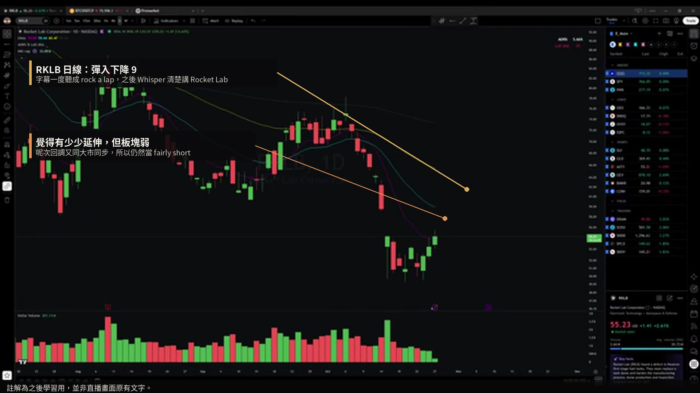
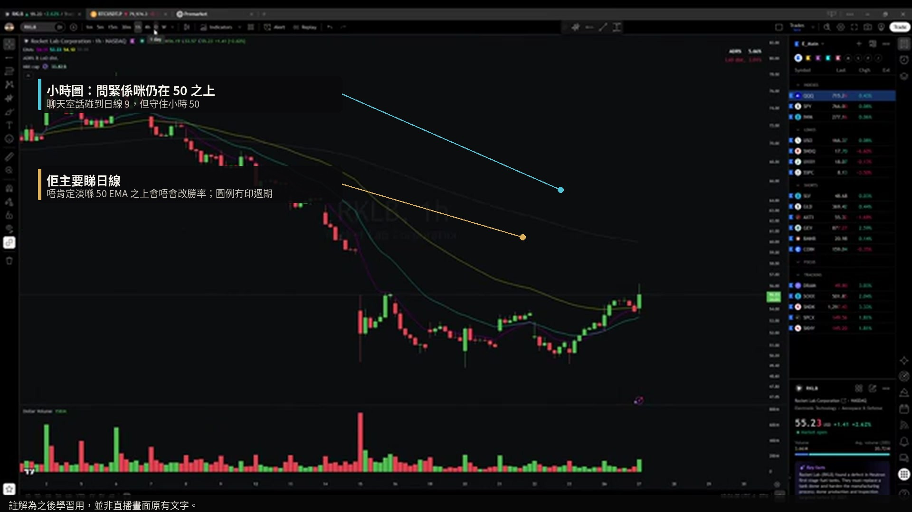

概要
日線同小時圖唔一致時，佢點取捨
43:36 聊天室問：今日淡倉碰到日線 9 EMA，但仍守住小時 50，價格又在小時 50 之上，仲算唔算好淡倉。佢話多數會以日線為主。Rocket Lab 對佢嚟講有少少延伸，但板塊好弱，今日呢次回調又同大市同步、一齊彈入下降 9，所以仍然當 fairly short。
佢唔肯定有冇數據證明「淡喺 50 EMA 之上完全唔影響勝率」，只係自己唔太理會呢點；又話如果你淡喺 9 或者 50 之上，唔會在嗰啲位置加倉。字幕一度把 RKLB 聽成 rock a lap，之後 Whisper 清楚講 rocket lab。
圖一
RKLB 日線：彈入下降 9
直播 44:00

原話
If short today, Rocket Lab, touches the daily 9 EMA but holding above the hourly 50, is it still a good short setup if the price is above hourly 50? Yeah, I get your point. Most of the time I will focus on the daily most. So Rocket Lab to me, I think it's a little bit extended, but yeah, it's a really weak sector, and I think today especially this pullback matches, it just correlates with the market, synchronized with the market, it's pulling back into the declining 9 at the same time, so I think it's still fine. I think I would still consider this is a fairly short.
如果今日淡 Rocket Lab，碰到日線 9 EMA，但守住小時 50，價格又在小時 50 之上，仲算唔算好淡倉？我明白你嘅意思。多數時候我會以日線為主。所以 Rocket Lab 對我嚟講，我覺得有少少延伸，但係，呢個板塊好弱，而且我覺得今日呢次回調啱啱同大市同步，一齊彈入下降中嘅 9，所以我覺得仍然可以。我仍然會當呢個係一個還可以嘅淡倉。
開首 Whisper 把 Rocket Lab 聽成 rock a lap；稍後同一段清楚講 rocket lab。以畫面 Rocket Lab Corporation（RKLB）為準。
點樣讀
取捨好清楚：小時 50 之上唔會自動取消呢個淡倉，因為佢主要睇日線，再加板塊同大市同步。
畫面公司名只當圖上文字。9、50 以口中為準，圖例冇印週期。
圖二
小時圖：問緊係咪仍在 50 之上
直播 44:10

原話
But whether, like, do I have any data that really I'm very certain that shorting above the 50 EMA would really make no difference in the win rate? Like I'm not sure, but personally I don't really bother this one. As you're like shorting above the 9, above the 50, you're not going to add those levels, and I tend to focus more on the daily.
但係，我有冇數據令我好肯定，淡喺 50 EMA 之上真係完全唔會改到勝率？我唔肯定，但就我自己而言，我唔太理會呢點。如果你係淡喺 9 之上、淡喺 50 之上，你唔會在嗰啲位置加倉，而且我傾向更睇日線。
點樣讀
佢冇提供勝率數字，亦冇把「唔在 9／50 之上加倉」講成一條可以照抄嘅硬規則，只係說明自己點處理呢種位置。
附註
注意事項
- 50:44–52:42 有人問應唔應捉升勢回調同跌勢反彈嘅細浪。佢話如果可以做大趨勢，就唔會為咗 3% 而放棄 30%，除非你在逆勢有好大優勢。呢段冇獨立走圖，唔單獨成科。